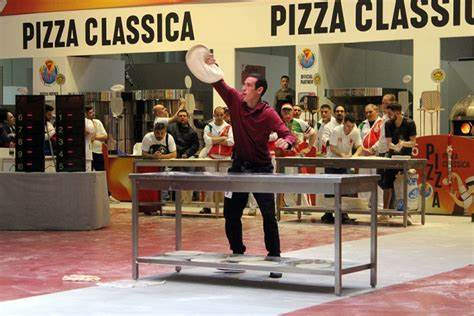
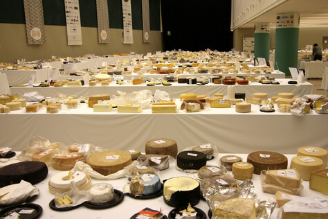
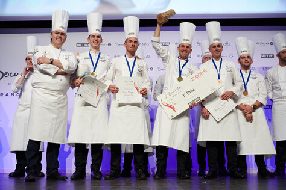
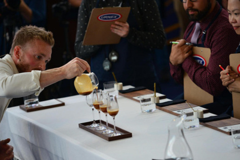

From 18 to 20 April 2023, the 30th edition of the most loved competition by pizza chefs from all over the world, will be held in Parma. Three days of competitions, cooking shows and seminars animated by more than 800 professionals from all over the world will celebrate in all its forms the world's best-loved three color dish pizza.Read more →

Pizza World Championship
April 18-19-20, 2023
Parma, Italy
A truly global cheese event, World Cheese brings together cheese makers, retailers, buyers and food commentators worldwide to judge over 4,000 cheeses in various categories, including hard cheeses, soft cheeses, and blue cheeses from over 40 countries. The World Cheese Awards will take place in Trondheim, Norway in October 2023.Read more →

World Cheese Award
October 26-29, 2023
Trondheim, Norway
For the past 35 years, the Bocuse d’Or held in Lyon has been an unrivaled international event that inspires the world of gastronomy by highlighting the latest trends in world cuisine, spurred on at each edition by new generations of chefs. It is also the favorite venue for many countries to promote their cuisine, their local produce, and their chefs.Read more →

Bocuse d'Or Championship
January 22-23, 2023
Lyon, France
The World Barista Championship is the preeminent international coffee competition produced annually and focuses on promoting excellence in coffee, advancing the barista profession, and engaging a worldwide audience with an annual championship event that serves as the culmination of local and regional events around the globe.Read more →

World Barista Championship
June 21-24, 2023
Athens, Greece